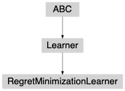

RegretMinimizationLearner¶
-
class
banditpylib.learners.regretmin.utils.RegretMinimizationLearner(pars)[source]¶ Bases:
banditpylib.learners.utils.LearnerBase class for a learner with goal regret minimization.
Before a game is run, a learner should be initialized with
reset(). During each time step,learner_step()is called to ask the learner for the choice of the action.update()is called by the protocol when the reward is revealed from the environment.Attributes Summary
Methods Summary
Attributes Documentation
-
goal¶ goal of the learner
- Type
str
-
protocol= 'SinglePlayerRegretMinProtocol'¶
Methods Documentation
-